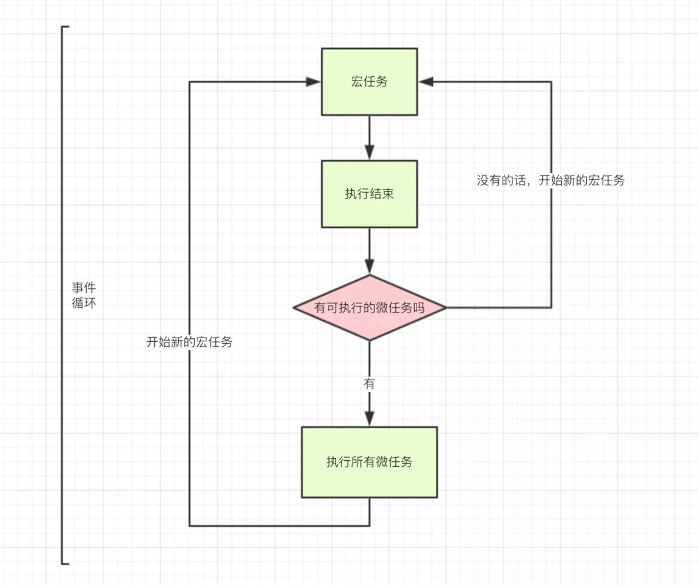
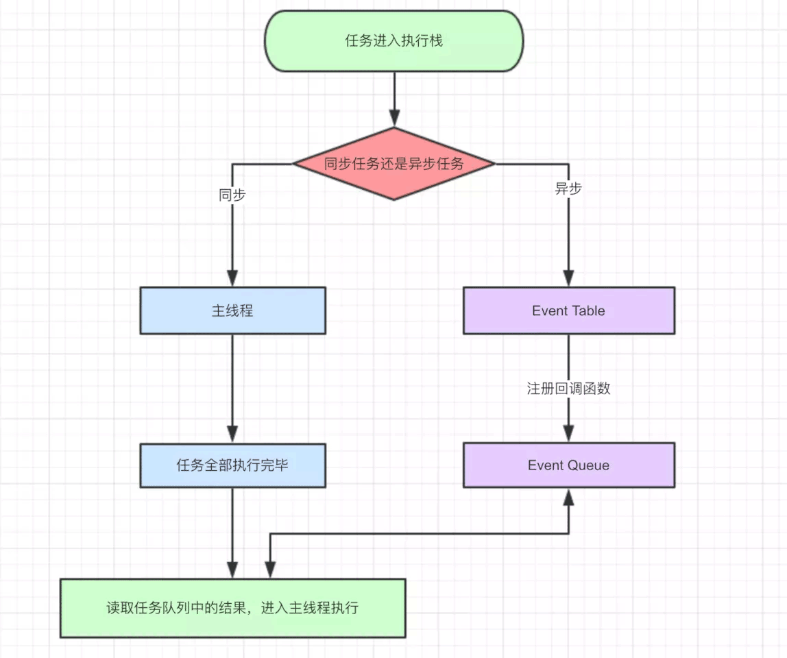

您现在的位置是：Sharing(来自转载)
js事件循环(event loop)、宏任务与微任务
2021-4-14
javascrip是单线程的，所谓的单线程是指js引擎中负责解释和实现js代码的线程只有一个，称之为主线程。
js的任务分为 同步 和 异步 两种，它们的处理方式也不同，同步任务是直接在主线程上排队执行，异步任务则会被放到任务队列中，若有多个任务（异步任务）则要在任务队列中排队等待，任务队列类似一个缓冲区，任务下一步会被移到调用栈（call stack），然后主线程执行调用栈的任务。
单线程是指js引擎中负责解析执行js代码的线程只有一个（主线程），即每次只能做一件事，而我们知道一个ajax请求，主线程在等待它响应的同时是会去做其它事的，浏览器先在事件表注册ajax的回调函数，响应回来后回调函数被添加到任务队列中等待执行，不会造成线程阻塞，所以说js处理ajax请求的方式是异步的。
事件循环机制：
- 主线程执行 JavaScript 整体代码，形成执行上下文栈，当遇到各种任务源时将其所指定的异步任务挂起，接受到响应结果后将异步任务放入对应的任务队列中，直到执行上下文栈只剩全局上下文；
- 将微任务队列中的所有任务队列按优先级、单个任务队列的异步任务按先进先出（FIFO）的方式入栈并执行，直到清空所有的微任务队列；
- 将宏任务队列中优先级最高的任务队列中的异步任务按先进先出（FIFO）的方式入栈并执行；
- 重复第 2 3 步骤，直到清空所有的宏任务队列和微任务队列，全局上下文出栈。


宏任务(macro-task)、微任务(micro-task)
- 除了广义的同步任务和异步任务，JavaScript 单线程中的任务可以细分为宏任务和微任务。
- macro-task包括：script(整体代码), setTimeout, setInterval, setImmediate, I/O, UI rendering。
- micro-task包括：process.nextTick, Promise, Object.observe, MutationObserver。
看列说明：
console.log('promise1')
resolve()
}).then(() => {
console.log('promise2')
})
console.log('start1')
setTimeout(() => {
console.log('a')
},2000)
setTimeout(() => {
console.log('b')
},1000)
setTimeout(() => {
Promise.resolve().then(() => {
console.log('promiseA')
}).then(() => {
console.log('promiseB')
})
})
Promise.resolve().then(() => {
console.log('promise88')
setTimeout(() => {
console.log(333)
})
}).then(() => {
console.log('promise2')
setTimeout(() => {
console.log(555)
})
})
console.log('start2')
-
首先javascrip全局上下文入栈，遇到new Promise()同步任务执行打印promise1 resolve()后 .then异步函数被推入微任务队列
-
遇到console.log('start1')同步立即执行打印start1
-
遇到setTimeout 异步任务2s后把要执行的任务推入宏任务队列中
-
遇到setTimeout 异步任务1s后把要执行的任务推入宏任务队列中
-
遇到setTimeout 异步任务立即把要执行的任务推入宏任务队列中
-
遇到Promise执行resolve后将第一个then方法推入微任务队列中
-
遇到console.log('start2')执行打印start2
-
此时打印了 promise1、start1、start2
-
执行完当前主线程后依次执行当前微任务队列、直至清空、队列的结构是先进先出、所以依次如下
-
执行第一个微任务打印promise2
-
执行第二个微任务打印promise88。紧接着遇到setTimeout 异步任务立即把要执行的任务推入宏任务队列中、将后面的then推入微任务队列中
-
执行第三个微任务打印promise2。紧接着遇到setTimeout 异步任务立即把要执行的任务推入宏任务队列中
-
检查当前微任务队列是否为空、为空将宏任务队列中的下一个入栈执行
-
遇到promsie.resolve()执行将then方法推入微任务队列
-
清空当前微任务队列打印promiseA 将后面的then又推入微任务队列
-
清空当前微任务队列打印promiseB
-
判断当前微任务队列是否为空、为空将下一个宏任务入栈并执行
-
打印333
-
打印555
-
打印a
-
打印b
-
全局上下文出栈，代码执行完毕。
最终结果为:
-
promise1
-
start1
-
start2
-
promise2
-
promise88
-
promise2
-
promiseA
-
promiseB
-
333
-
555
-
b
-
a